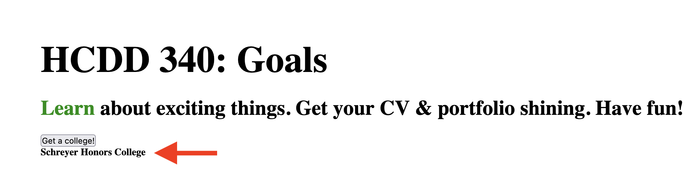

JS II
Today
- Function
- Objects
- Document Object Model (DOM)
- Events
Recap from last class
- Variables
- Conditionals
- Loops
- Strings
- Arrays
Variables
const, let,
var
const x = 1;
let y = 2;
var z = 3;var
Global variable
var x = 1;
if (x === 1) {
var x = 2;
console.log(x);
// expected output: 2
}
console.log(x); // expected output: 2let
let y = 1;
if (y === 1) {
let y = 2;
console.log(y);
// expected output: 2
}
console.log(y); // expected output: 1Local variable (within the block)
const
Once assigned, can’t change values
Conditionals
if (condition) {
/* code to run if condition is true */
} else {
/* run some other code instead */
}Equality check in JS 😬

Equality check in JS
- Prefer === and !==
- Instead of
==and!= - why
- Instead of
if-else
if (choice === "sunny") {
s = "Wear shorts!";
} else if (choice === "rainy") {
s = "Take umbrella";
} else {
s = "";
}Nesting if-else
if (choice === "sunny") {
if (temp >= 70) {
s = "Wear shorts!";
} else if (temp <= 40) {
s = "Pants!";
} else {
s = "Your choice!"
}
}Logical operators
&&(and)- all conditions must be true
||(or)- at least one condition is true
!(not)- negate the value
Logical operators
if ((choice === "sunny") && (temp >= 70)) {
s = "Wear shorts!";
}
Loops
for
for (initializer; condition; final-expression) {
// code to run
}Loops
for
for (let i = 1; i < 10; i++) {
// code to run
}while
initializer
while (condition) {
// code to run
final-expression
}while
let N = 10;
let i = 0;
while (i < N) {
// code to run
i++;
}do-while
initializer
do {
// code to run
final-expression
} while (condition)do-while
let N = 10;
let i = 0;
do {
// code to run
i++;
} while (i < N);Strings
Handling text in JS
const single = 'Single quotes';
const double = "Double quotes";
const backtick = `Backtick`;
console.log(single);
console.log(double);
console.log(backtick);Concat strings
const greeting2 = "Hello";
const name2 = "HCDD 340!";
console.log(greeting2 + ", " + name2); // "Hello, HCDD340!"Template literal
- Strings declared using backticks
- Can embed JavaScript
- Can span multiple lines
Template literal
Embed JS
- Variables or expression within
${ }- Result will replace
${ }
- Result will replace
Template literal
const name = "HCDD 340";
const greeting = `Hello, ${name}`;
console.log(greeting);Template literal
Multiline strings
const newline = `One day you finally knew
what you had to do, and began,`;
console.log(newline);
/*
One day you finally knew
what you had to do, and began,
*/
Line breaks are maintained
Strings
Arrays
List of values
const sequence = [1, 1, 2, 3, 5, 8, 13];Length
const sequence = [1, 1, 2, 3, 5, 8, 13];
console.log(sequence.length);Accessing items
const shopping = ["bread", "milk", "cheese",
"hummus", "noodles"];
console.log(shopping[0]);Index starts at Zero
Change items
const shopping = ["bread", "milk", "cheese",
"hummus", "noodles"];
shopping[0] = "tahini";
console.log(shopping[0]);Adding items
push–> adds at the endunshift–> adds at the front
const cities = ["Manchester", "Liverpool"];
cities.push("Cardiff");
console.log(cities);
// [ "Manchester", "Liverpool", "Cardiff" ]
cities.push("Bradford", "Brighton");
console.log(cities);
// [ "Manchester", "Liverpool", "Cardiff", "Bradford", "Brighton" ]Adding items
unshift
const cities = ["Manchester", "Liverpool"];
cities.unshift("Edinburgh");
console.log(cities);
// [ "Edinburgh", "Manchester", "Liverpool" ]unshift –> adds at the front
Removing items
pop–> from the endshift–> from the front
const cities = ["Manchester", "Liverpool"];
const removedCity = cities.pop();
console.log(removedCity); // "Liverpool"Removing items
shift
const cities = ["Manchester", "Liverpool"];
cities.shift();
console.log(cities); // [ "Liverpool" ]shift –> from the front
Iterating array values
for loop
const arr = [1, 2, 3, 4];
for (let i = 0; i < arr.length; i++) {
console.log(arr[i]);
}
Iterating array values
for-of loop
for (let element of arr) {
console.log(element);
}
Arrays
Today
- Function
- Object
- Document Object Model (DOM)
- Events
Great resource

Functions
function myFunction() {
alert("hello");
}
myFunction();
// calls the function onceParameters
function addition(a, b) {
return a + b;
}
console.log(addition(1, 2));Default parameters
function addition(a, b=10) {
return a + b;
}
console.log(addition(9));
console.log(addition(9, 3));Arrow function
const myAddition = (a, b = 10) => {
return a + b;
}
console.log(myAddition(9));
Arrow function
const oneLiner = (a, b) => a + b;
console.log(oneLiner(12, 5));Arrow function
const noParam = () => {
console.log("hello");
}Todo
- In Dev Tool –> Console
- Copy/paste
noParamfunction definition - Call the function
Higher-order functions
Functions are regular ‘values’
- Assign functions to variables
- Pass a function as an argument to another function
- Return a function from another function
Higher-order functions
- Functions that
- take other functions as arguments
- or, return other functions
Higher-order functions
function repeat(n, action) {
for (let i = 0; i < n; i++) {
action(i);
}
}
// Note console.log is a function
repeat(3, console.log);Higher-order functions
function greaterThan(n) {
return m => m > n;
}
let greaterThan10 = greaterThan(10);
console.log(greaterThan10(11));Todo
- Use the
repeatfunction - Add 5 elements in the
labelsarray - You can use
pushorunshift
let labels = [];
// Add your code here
// repeat( ... )
console.log(labels);
// [ 0, 1, 2, 3, 4 ]let labels = [];
// Add your code here
repeat(5, i => {
labels.push(i);
});
console.log(labels);
// [ 0, 1, 2, 3, 4 ]Today
- Function
- Objects
- Document Object Model (DOM)
- Events
Objects
Collection of data and functions
const objectName = {
member1Name: member1Value,
member2Name: member2Value,
member3Name: member3Value,
};Creating Objects
const person = {
name: ["Bob", "Smith"],
age: 32,
bio() {
console.log(`${this.name[0]} is ${this.age} years old.`);
},
introduceSelf() {
console.log(`Hi! I'm ${this.name[0]}.`);
},
};Accessing object properties and methods
person.age;
person.bio();
Using dot
Accessing object properties and methods
person["age"];
person["name"]["first"];Using bracket
Todo
Run this code in Console
const person = {
name: ["Bob", "Smith"],
age: 32,
bio() {
console.log(`${this.name[0]} is ${this.age} years old.`);
},
introduceSelf() {
console.log(`Hi! I'm ${this.name[0]}.`);
},
};Todo
Run this code in Console
person.name;
person.name[0];
person.age;
person.bio();
// "Bob is 32 years old."
person.introduceSelf();
// "Hi! I'm Bob."What’s this?
this points to
current object
const person = {
// …
introduceSelf() {
console.log(`Hi! I'm ${this.name[0]}.`);
},
};this points to
current object
const person1 = {
name: "Chris",
introduceSelf() {
console.log(`Hi! I'm ${this.name}.`);
},
};
const person2 = {
name: "Deepti",
introduceSelf() {
console.log(`Hi! I'm ${this.name}.`);
},
};What will happen for person1.introduceSelf()?
Setting values
dot or bracket notation
person.age = 45;
person["name"]["last"] = "Cratchit";Todo
- Download Activity 12
- Change
main.js: collegeshould be an array of objects with propertyname
Today
- Function
- Objects
- Document Object Model (DOM)
- Events
DOM
Document Object Model
- Documents are represented by DOM
- “Tree” structure
- We can select and update items in DOM
DOM
index.html
from the last class activity

DOM
Each entry in the tree is a
node
- Root node
- Top node (
HTML)
- Top node (
- Parent node
- Child node
- Descendant node
- Sibling node
Selecting nodes
Using CSS selectors
document.querySelectorreturns- the first element that matches the selector
- or,
nullif no match
Selecting nodes
Using CSS selectors
// first element matching a class
document.querySelector(".myclass");
// by id
document.querySelector("#log");
Selecting nodes
Using CSS selectors
/* first element with
- with the name "login"
- located inside a `<div>`
- with the class `user-panel main`
*/
document.querySelector(
"div.user-panel.main input[name='login']"
);
Selecting nodes
querySelectorAll()
returns all matching nodes as an array
Updating nodes
Text or link
const link = document.querySelector("a");
link.textContent = "HCDD 340";
link.href = "https://hcdd-340.github.io/"Updating nodes
Updating nodes
Manipulating styles
para.style.color = "white";
para.style.backgroundColor = "black";
para.style.padding = "10px";
para.style.width = "250px";
para.style.textAlign = "center";Todo
- Open Activity 12 in Firefox/Chrome
- Change the color of
Learntored- Using JS in Dev Tools –> Console

Todo
Hints
- First select the node
- using
document.querySelector
- using
- Change color using
style.color
Today
- Function
- Objects
- Document Object Model (DOM)
- Events
Handling events
- Events
- Selection, Clicking, Typing
- Many events are possible!
Handling events
- To handle an event
- Attach an event listener to an element
- Using
addEventListener()
- Using
- When an event is fired
- The event listener will be called
- Attach an event listener to an element
Handling events
const button = document.querySelector("button");
button.addEventListener("click", (event) => {
console.log("clicked!")
console.log(event);
});The event object
Contains useful information
const button = document.querySelector("button");
button.addEventListener("click", (event) => {
console.log("clicked!")
console.log(event);
});Todo
- Open Activity 12 in Firefox/Chrome
- Run the following code in Dev Tools –> Console
- Click on the button
const button = document.querySelector("button");
button.addEventListener("click", (event) => {
console.log("clicked!")
console.log(event);
});What do you see in Console?
The event object
button.addEventListener("click", (event) => {
event.target.style.color = "purple";
console.log(event);
});
target points to source of the event
Todo
- Open Activity 11 in VS Code
- Update
main.js(see hints on line 23–27)
Todo
- Add a function called
chooseCollege- using arrow syntax
- When called the function
- it should select a random item from
colleges - update the
<h4>with the selected items
- it should select a random item from

Todo
- Download Activity 13
- Add two event handlers for “HCDD 340: Goals”
- mouseenter
event:
- print: “Entered”
- change color to red
- mouseleave
- print: “Left”
- change color to black